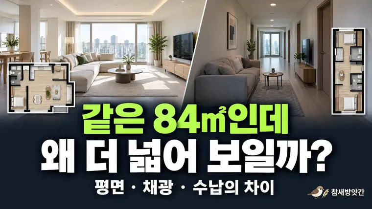

같은 평수인데 집 크기가 다르게 느껴지는 이유, 아파트 구조와 공간 활용의 차이
같은 84㎡라도 복도 길이와 채광, 수납에 따라 집이 넓게도 좁게도 느껴집니다. 집을 보러 갈 때 확인할 항목을 정리합니다.

아파트를 알아보다 보면 면적이 같은데도 실제로 방문했을 때 공간의 크기가 다르게 느껴지는 경우가 있습니다. 분명 같은 전용면적 84㎡인데 어떤 집은 거실이 넓고 시원하게 느껴지는 반면, 다른 집은 상대적으로 좁거나 답답하게 느껴지기도 합니다.
이러한 차이는 단순히 개인의 느낌에서만 발생하는 것이 아닙니다. 아파트의 평면 구조와 공간 배치, 채광, 천장 높이, 가구의 배치 방식 등 여러 요소가 복합적으로 작용하기 때문입니다.
따라서 아파트를 비교할 때는 면적이라는 숫자만 확인하기보다 실제 공간이 어떻게 구성되어 있는지 살펴보는 것이 중요합니다.
이번 글에서는 동일한 평수의 아파트가 서로 다르게 느껴지는 이유와 집을 직접 방문할 때 확인하면 좋은 공간 활용 요소들을 알아보겠습니다.
1. 같은 면적이라도 평면 구조에 따라 공간 활용도가 달라진다
아파트의 전용면적이 같다는 것은 법정 기준에 따라 산정된 주거 공간의 면적이 같다는 의미입니다. 하지만 그 면적이 어떤 형태로 배치되어 있는지까지 동일하다는 뜻은 아닙니다.
예를 들어 동일한 면적의 아파트 두 곳이 있다고 가정해 보겠습니다.
A 아파트는 거실을 중심으로 침실과 주방이 배치되어 있고, B 아파트는 현관에서 거실까지 이어지는 복도가 상대적으로 긴 구조입니다.
두 아파트의 전체 면적이 같더라도 B 아파트는 복도와 이동 동선이 차지하는 공간이 상대적으로 많을 수 있습니다.
반면 A 아파트는 생활공간이 한곳에 모여 있어 거실이나 침실을 더 넓게 활용할 가능성이 있습니다.
이처럼 공간의 활용도는 단순한 면적보다 평면 구조와 밀접한 관계가 있습니다.
복도와 이동 동선이 중요한 이유
집 안에서 이동하기 위해 필요한 공간은 반드시 존재해야 합니다. 다만 복도가 지나치게 길거나 방과 방 사이의 이동 경로가 복잡하다면 실제 생활공간으로 활용할 수 있는 면적이 줄어들 수 있습니다.
특히 현관에서 거실까지 이어지는 복도가 길고 좁은 구조라면 집에 들어섰을 때 전체 공간이 한눈에 들어오지 않아 상대적으로 작게 느껴질 수 있습니다.
반대로 현관을 지나 거실과 주방이 자연스럽게 연결되는 구조는 시야가 넓게 확보되어 개방적인 인상을 줄 수 있습니다.
따라서 평면도를 살펴볼 때는 방의 개수뿐 아니라 복도와 출입구의 위치, 주요 생활공간 사이의 이동 경로도 함께 확인하는 것이 좋습니다.
2. 판상형과 타워형 아파트는 어떤 차이가 있을까?
아파트 구조를 설명할 때 자주 등장하는 용어가 판상형과 타워형입니다.
두 구조는 건물의 형태와 세대 배치 방식에서 차이가 있으며, 이에 따라 실내 공간의 구성도 달라질 수 있습니다.
판상형 아파트의 특징
판상형은 일반적으로 건물이 길게 배치되는 형태를 말합니다.
세대의 평면 구성에 따라 거실과 침실을 일정한 방향으로 배치하기 쉬우며, 앞뒤로 창문이 있는 구조에서는 맞통풍이 가능한 경우도 있습니다.
특히 거실과 여러 침실이 전면에 배치된 구조는 외부를 향한 창이 많아 개방적인 느낌을 줄 수 있습니다.
다만 판상형이라고 해서 모든 세대의 채광과 통풍이 좋은 것은 아닙니다. 실제 방향과 동 간 거리, 주변 건물의 위치에 따라 차이가 발생합니다.
타워형 아파트의 특징
타워형은 건물의 중심부를 기준으로 여러 세대가 다양한 방향으로 배치되는 형태입니다.
세대별로 거실과 침실의 방향이 다르게 구성될 수 있으며, 일부 평면에서는 두 방향으로 창을 배치한 이면 개방형 구조를 활용하기도 합니다.
이러한 구조는 특정 공간에서 넓은 조망을 확보하거나 개성 있는 평면을 구성하는 데 유리할 수 있습니다.
반면 평면 형태에 따라 복도나 모서리 공간이 발생할 수 있으므로 실제 가구 배치가 가능한 면적을 확인하는 것이 좋습니다.
결국 판상형과 타워형 중 어느 구조가 무조건 더 넓다고 판단하기는 어렵습니다.
같은 전용면적이라도 개별 세대의 평면도와 실제 공간 구성을 기준으로 비교하는 것이 합리적입니다.
3. 채광과 천장 높이가 공간감에 미치는 영향
집의 크기를 느끼는 데에는 바닥 면적뿐 아니라 시각적인 요소도 중요한 역할을 합니다.
대표적인 것이 채광과 천장 높이입니다.
창문을 통해 자연광이 충분히 들어오는 공간은 상대적으로 밝고 개방적인 인상을 줄 수 있습니다.
반면 같은 크기의 거실이라도 창문이 작거나 주변 건물에 의해 빛이 가려진다면 공간이 다소 답답하게 느껴질 수 있습니다.
창문의 크기와 위치
거실 창문의 크기와 위치는 실내에서 느끼는 개방감에 영향을 줍니다.
특히 거실에서 외부 조망이 넓게 확보되는 구조는 시선이 실내에만 머무르지 않아 공간이 확장된 것처럼 느껴질 수 있습니다.
다만 큰 창문이 있다고 해서 항상 채광이 좋은 것은 아닙니다.
창문의 방향, 주변 건물과의 거리, 계절에 따른 태양의 위치 등을 함께 고려해야 합니다.
아파트를 방문할 때는 가능하다면 낮 시간대의 자연광 상태를 직접 확인하는 것이 도움이 됩니다.
천장 높이도 확인해야 한다
일반적인 아파트에서는 바닥 면적을 중심으로 크기를 비교하지만, 실제 공간감에는 천장 높이도 영향을 미칩니다.
천장이 상대적으로 높은 공간은 같은 바닥 면적이라도 수직 방향으로 여유가 느껴질 수 있습니다.
반대로 천장이 낮거나 천장 일부에 구조물이 돌출되어 있다면 같은 면적에서도 압박감이 생길 수 있습니다.
특히 거실이나 주방처럼 오랜 시간을 보내는 공간에서는 천장 높이와 조명 배치가 전체적인 분위기에 영향을 줍니다.
따라서 면적이 같은 아파트를 비교할 때는 바닥의 넓이뿐 아니라 공간의 높이와 채광 조건도 함께 살펴보는 것이 좋습니다.
4. 가구 배치와 수납공간에 따라 실제 생활 면적이 달라진다
아파트를 처음 방문했을 때 넓어 보였던 집도 가구를 배치하고 나면 예상보다 좁게 느껴지는 경우가 있습니다.
이는 실제 생활에서 사용하는 가구와 가전제품이 일정한 공간을 차지하기 때문입니다.
예를 들어 거실에 소파와 테이블, TV 수납장을 배치하면 이동할 수 있는 공간이 줄어듭니다.
침실 역시 침대와 옷장, 화장대를 배치한 뒤에는 남는 공간이 처음 예상했던 것보다 작을 수 있습니다.
따라서 아파트의 크기를 판단할 때는 비어 있는 상태의 공간감만으로 결정하지 않는 것이 좋습니다.
수납공간이 충분한 집이 넓게 느껴지는 이유
붙박이장이나 팬트리처럼 별도로 마련된 수납공간은 생활용품을 정리하는 데 도움이 됩니다.
수납공간이 부족한 집에서는 별도의 서랍장이나 수납장을 추가로 설치해야 할 수 있습니다.
이 경우 거실이나 침실의 일부를 수납 용도로 사용하게 되어 실제 생활공간이 줄어들 수 있습니다.
반면 수납공간이 효율적으로 배치된 집은 생활용품이 외부로 노출되는 것을 줄일 수 있어 상대적으로 정돈되고 넓은 느낌을 줄 수 있습니다.
물론 수납공간이 많다고 해서 반드시 좋은 구조인 것은 아닙니다. 수납장의 깊이와 위치, 문을 여닫을 때 필요한 공간까지 함께 고려해야 합니다.
집을 방문할 때 확인하면 좋은 사항
같은 면적의 아파트를 비교하고 있다면 다음 항목을 확인해 보세요.
| 확인 항목 | 살펴볼 내용 |
|---|---|
| 거실 구조 | 소파와 TV를 배치할 수 있는 벽면이 충분한가? |
| 침실 크기 | 침대와 옷장을 배치한 뒤 이동 공간이 남는가? |
| 주방 동선 | 냉장고와 식탁을 놓았을 때 이동이 편리한가? |
| 수납공간 | 생활용품을 보관할 공간이 충분한가? |
| 창문과 채광 | 주요 생활공간에 자연광이 들어오는가? |
| 복도 구조 | 불필요하게 길거나 활용하기 어려운 공간은 없는가? |
이러한 항목은 단순히 평수 계산만으로 확인하기 어려운 부분입니다.
따라서 온라인 매물에서 면적을 비교한 뒤에는 평면도를 살펴보고, 가능하다면 실제 집을 방문해 가구 배치와 생활 동선을 확인하는 것이 좋습니다.
마무리: 넓은 집보다 공간을 효율적으로 활용할 수 있는 집이 중요하다
같은 평수의 아파트라도 실제로 느껴지는 크기는 다를 수 있습니다.
복도와 거실의 배치, 판상형과 타워형의 구조적 차이, 채광과 천장 높이, 수납공간과 가구 배치 등이 공간감에 영향을 주기 때문입니다.
따라서 아파트를 비교할 때는 전용면적이라는 숫자만 확인하기보다 실제 생활에서 사용할 수 있는 공간이 어떻게 구성되어 있는지 살펴보는 것이 좋습니다.
평수 계산기를 통해 면적을 비교하는 것은 좋은 출발점이지만, 최종적으로는 평면도와 실제 내부 구조를 함께 확인해야 집의 활용도를 더 정확하게 판단할 수 있습니다.
다음 글에서는 아파트나 주택을 거래할 때 발생하는 부동산 중개수수료가 어떤 기준으로 정해지는지 살펴보겠습니다.
- 국토교통부: 공동주택 관련 정보 및 주택 면적 기준
- 국가법령정보센터: 주택법 및 주택공급에 관한 규칙
- 건축물대장: 공동주택 전유부 면적 확인 자료
- 공동주택 분양 안내자료: 세대별 평면도 및 면적표
※ 본문에서 설명한 공간 구조와 사례는 일반적인 아파트 평면 특성을 이해하기 위한 정보입니다. 실제 공간 활용도는 해당 주택의 설계와 내부 상태에 따라 달라질 수 있습니다.
이 글의 내용은 일반적인 아파트 평면 특성을 설명한 2026년 10월 기준 정보입니다. 실제 공간 활용도는 해당 주택의 설계와 내부 상태에 따라 달라질 수 있습니다.
자주 묻는 질문
법정 기준에 따라 산정된 전용면적이 같더라도 평면 구조와 내부 벽체, 복도 배치, 발코니 확장 여부 등에 따라 실제 공간 활용도에는 차이가 발생할 수 있습니다.
그렇지 않습니다. 판상형과 타워형은 건물 및 세대 배치 방식의 차이를 나타내는 개념입니다. 실제 공간감은 개별 평면 구조와 채광, 창문 위치 등에 따라 달라질 수 있습니다.
거실과 침실의 가구 배치 가능 여부, 주방과 복도의 이동 동선, 수납공간, 창문 위치, 채광 등을 함께 확인하는 것이 좋습니다. 특히 현재 사용 중인 가구의 크기를 미리 측정해 두면 실제 입주 후 공간 활용을 예상하는 데 도움이 됩니다.
확장하면 거실이나 침실이 넓어져 가구를 놓을 수 있는 범위가 달라질 수 있지만, 등기상 전용면적이 늘어나는 것은 아닙니다. 평면도로 확장 여부를 함께 확인하세요.